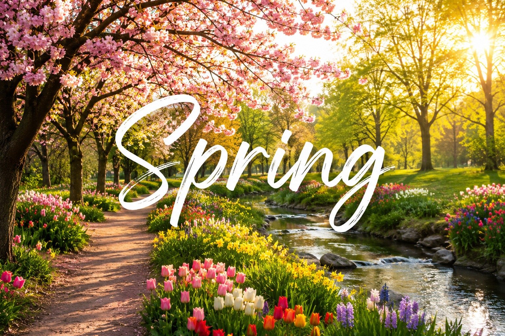

مرحباً بكم يا أصدقائي 😍
النهاردة هنتكلم عن موضوع جميل وممتع وهو فصول السنة الأربعة 🌸☀🍂❄.
✨ مقدمة عن فصول السنة
فصول السنة يا أصدقائي 🌸☀️🍂❄️ هي أربع أوقات بيمر بيها العام كله. كل فصل له شكله المميز وجو مختلف عن التاني. ❄️الربيع🌸 ييجي بعد الشتاء❄️، والصيف ☀️ييجي بعد الربيع🌸، والخريف🍂 ييجي بعد الصيف☀️، وأخيرًا ييجي الشتاء. الفصول دي بتخلي حياتنا متنوعة وجميلة. في كل فصل بنعمل حاجات مختلفة ونستمتع بأوقات جديدة. من غير الفصول، الدنيا كانت هتبقى كلها شبه بعض ومملة. علشان كده لازم نتعلم عن كل فصل ونعرف إيه مميزاته، ونشوف إزاي نقدر نستفيد ونستمتع بيه.
✨ شرح بسيط لفصول السنه الاربعه
الربيع 🌸

في الربيع بتتفتح الأزهار🌼، وتبقى الدنيا كلها خضرة وجميلة. الطيور🐦 بتغرد والجو بيكون معتدل لا هو حر ولا برد. الربيع هو فصل النشاط والسعادة😃،
وكأنه بداية حياة جديدة.
الصيف 🌞
الصيف🌞 معروف بالحر والشمس الساطعة🌞. الناس بتحب تروح البحر🌊 وتلعب على الشاطئ🏄🏻♀️. في الصيف بناكل آيس كريم كتير🍦 ونشرب عصاير علشان نرطب جسمنا. هو فصل اللعب والرحلات والمغامرات.
الخريف 🍂

في الخريف تبدأ أوراق الشجر تقع 🍂من الأشجار وتعمل مناظر جميلة على الأرض. الجو بيبدأ يبرد شوية ويدينا إحساس بالهدوء. الخريف فصل مميز لأنه بيجهّزنا للشتاء❄️، وبيخلينا نفكر ونستمتع بلحظات التأمل.
الشتاء ❄
الشتاء فصل البرد 🥶والمطر🌧️. في الشتاء بنحب نشرب مشروبات سخنة زي الكاكاو☕. ونلبس لبس دافي. بعض البلاد بيكون فيها ثلج 🌨️والناس بيلعبوا ويبنوا رجل التلج.⛄ الشتاء فصل الراحة والهدوء.
كل فصل من الفصول الأربعة ليه ذكريات مختلفة وحكايات جميلة. ممكن في الربيع تزرع ورد 🌹، وفي الصيف تلعب على البحر 🏖، وفي الخريف تقرأ كتاب وانت سامع صوت الهواء 🍁، وفي الشتاء تتدفّى ببطانية وتشرب حاجة سخنة ☕. الفصول دي بتعلّمنا إن الحياة مش ثابتة، وإن التغيير جميل، وكل وقت له جماله الخاص. مفيش فصل وحش، بالعكس كل فصل بيدينا متعة مختلفة
مميزات فصول السنه
🌸 مميزات فصل الربيع:
- الطقس معتدل وجميل، لا هو حر ولا هو برد 🌞
- الأشجار بتتفتح والأزهار الملونة بتظهر في كل مكان 🌷🌼
- الجو مناسب للخروج للحدائق والتمشية في الطبيعة 🌳
- الناس بتزرع نباتات جديدة في الربيع وبتظهر خضرة كتير 🌿
- بيعتبر بداية الحياة والنشاط بعد الشتاء ❄
🔥 مميزات فصل الصيف::
- الطقس حر جدًا والشمس قوية طول اليوم ☀
- فرصة ممتازة للسفر للبحر والسباحة 🏖🏊
- فيه أجازة طويلة للمدارس، والأطفال بيلعبوا كتير 🎉
- المثلجات والعصاير الباردة بتكون الأكلات المفضلة 🍦🥤
- بيتميز بالأنشطة الخارجية زي كرة القدم والجري ⚽.
🍂 مميزات فصل الخريف:
- أوراق الشجر بتقع وبتعمل مناظر طبيعية جميلة 🍁.
- الجو بيبدأ يبرد تدريجيًا استعدادًا للشتاء 🌥
- بيكون وقت مناسب للهدوء والتأمل والقراءة 📖
- الأشجار بتتغير ألوان أوراقها للأصفر والبرتقالي والأحمر 🍂.
- الناس بتحب تقعد في البيت مع مشروبات دافية ☕.
❄ مميزات فصل الشتاء:
- الطقس بارد جدًا وأحيانًا بيكون فيه ثلج ⛄.
- نزول المطر بيخلي الجو مميز وصوت المطر مريح للأعصاب 🌧.
- الناس بتحب تشرب مشروبات سخنة زي الكاكاو والشاي ☕🍫
- الملابس الشتوية التقيلة بتخلي الجسم دافي 🧥🧣..
- بيكون وقت للراحة ولمّ العيلة في البيت ❤.
معلومات عن فصول السنه
| اسم الفصل | الشهر | الطقس | النشاط المفضل | النباتات المشهورة | الملابس المناسبة | الأكلات المشهورة | المناسبات |
|---|---|---|---|---|---|---|---|
| بيانات الربيع | مارس – إبريل – مايو | معتدل مع شمس جميلة ونسمة هوا | الخروج للحدائق وزراعة الزهور | الورد – التوليب – الياسمين | ملابس خفيفة مع جاكيت | الفول والجبنة والسلطات | عيد الأم – شم النسيم |
| بيانات الصيف | يونيو – يوليو – أغسطس | حر جدًا والشمس قوية | السباحة واللعب في البحر | النخيل – الصبار | ملابس قطنية خفيفة | الآيس كريم والعصائر | العطلة الصيفية – السفر |
| بيانات الخريف | سبتمبر – أكتوبر – نوفمبر | نسيم بارد وأوراق الشجر تقع | قراءة الكتب والمشي الهادئ | أشجار التفاح – الكستناء | ملابس خريفية دافئة | الحساء الساخن والفطائر | بداية المدارس |
| بيانات الشتاء | ديسمبر – يناير – فبراير | بارد جدًا وممطر | الجلوس بجانب المدفأة وشرب الكاكاو | الأشجار دائمة الخضرة – الصنوبر | جاكيت تقيل وقفازات | الشوربة والمشروبات الساخنة | رأس السنة الميلادية |